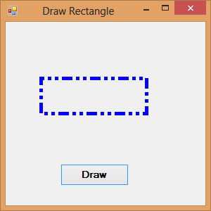

Visual Studio 2013 Lesson 26: Creating Graphics- Rectangle
[Lesson 25] << [Contents] >> [Lesson 27]
In the in the preceding lesson , we have learned how to create Graphics and the Pen objects to draw straight lines in Visual Basic 2013 . Now we shall learn how to draw rectangles.
26.1 Creating Rectangle
To draw a rectangle on the default form in Visual Basic 2013, there are two ways:
The syntax is:
myGrapphics.DrawRectangle(myPen, X, Y, width, height)
Where myGraphics is the variable name of the Graphics object and myPen is the variable name of the Pen object created by you. You can use any valid and meaningful variable names. X, Y is the coordinate of the upper left corner of the rectangle while width and height are self-explanatory, i.e, the width and height of the rectangle.
The code is as follows:
Dim myPen As Pen
myPen = New Pen(Drawing.Color.Blue, 5)
Dim myGraphics As Graphics = Me.CreateGraphics
myGraphics.DrawRectangle(myPen, 0, 0, 100, 50)
(ii) The second way is to create a rectangle object first and then draw this triangle using the DrawRectangle method. The syntax is as shown below:
myGraphics.DrawRectangle(myPen,myRectangle) where myRectangle is the rectangle object created by you, the user.
The code to create a rectangtle object is as shown below:
Dim myRectangle As New Rectangle
myRect.X = 10
myRect.Y = 10
myRect.Width = 100
myRect.Height = 50
You can also create a rectangle object using a one-line code as follows:
Dim myRectangle As New Rectangle(X,Y,width, height)
and the code to draw the above rectange is
myGraphics.DrawRectangle(myPen, myRectangle)
26.2 Customizing Line Style of the Pen Object
The shape we draw so far are drawn with solid line, we can actually customize the line style of the Pen object so that we have dotted line, line consisting of dashes and more. For example, the syntax to draw with dotted line is shown below:
myPen.DashStyle=Drawing.Drawing2D.DashStyle.Dot
Where the last argument Dot specifies a particular line DashStyle value, a line that makes up of dots here. Other DashStyles values are Dash, DashDot, DashDotDot and Solid.The following code draws a rectangle with blue dotted line.
Private Sub Button1_Click(ByVal sender As System.Object, ByVal e As System.EventArgs) Handles Button1.ClickDim myPen As Pen
myPen = New Pen(Drawing.Color.Blue, 5)
Dim myGraphics As Graphics = Me.CreateGraphics
myPen.DashStyle = Drawing.Drawing2D.DashStyle.Dot
myGraphics.DrawRectangle(myPen, 10, 10, 100, 50)
End Sub
The output image is as shown in Figure 26.1
{kind=link}
If you change the DashStyle value to DashDotDot, you will get the following rectangle :
Figure 26.2
{kind=link}